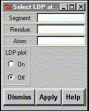

**************************************************************************
Linear distance plot (LDP) widget
Leif Laaksonen CSC 1996
**************************************************************************
Select the atoms to be include in the linear distance plot (LDP).
Select the atoms, set the LDP plot state to "ON" and press the apply button

Line command: see plot command
**************************************************************************
LUL/1996
**************************************************************************